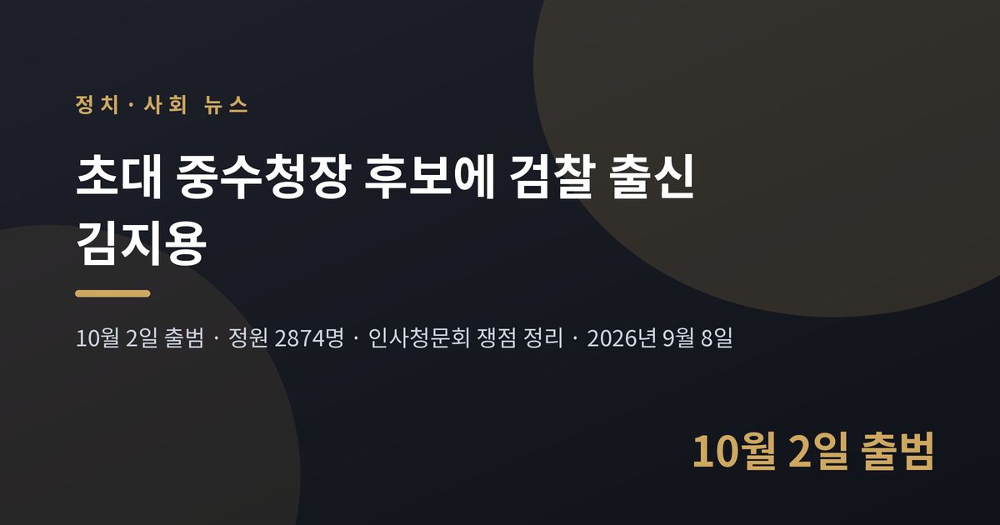
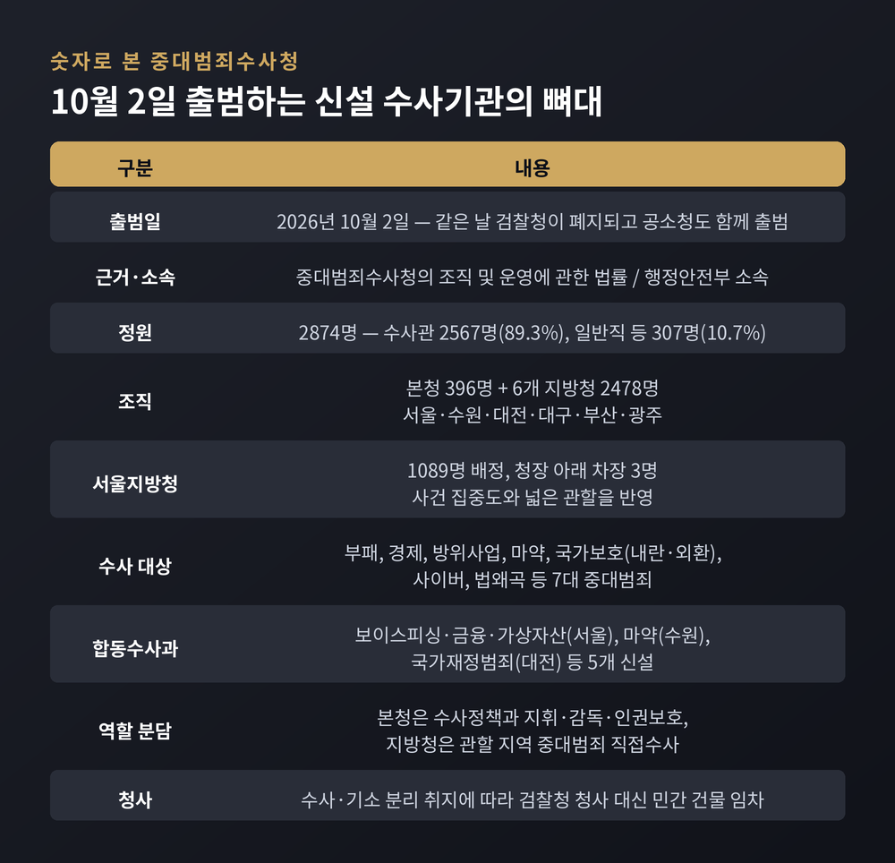
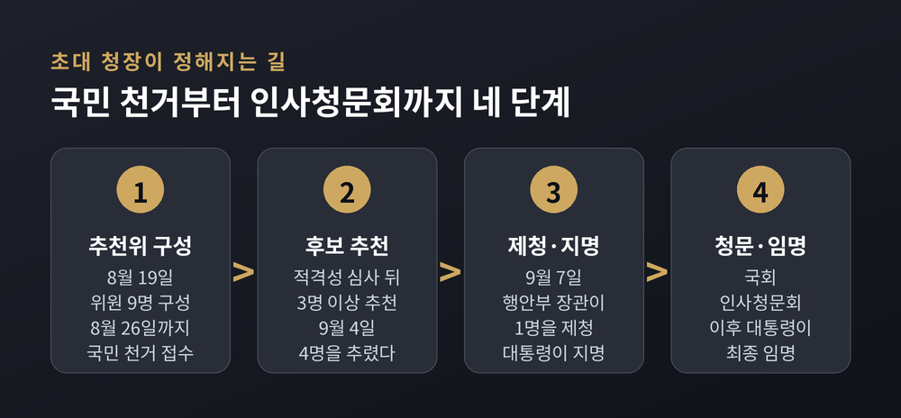
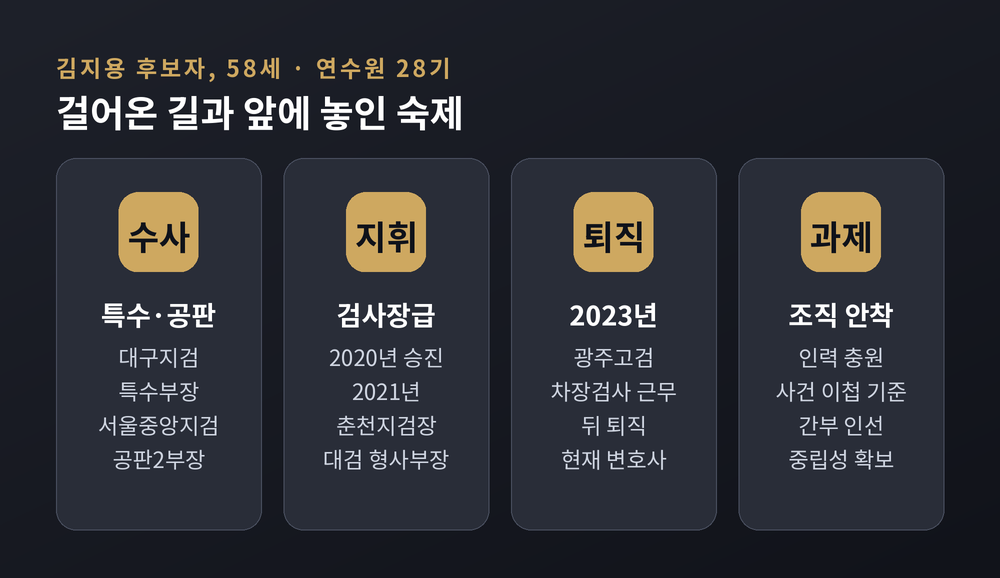
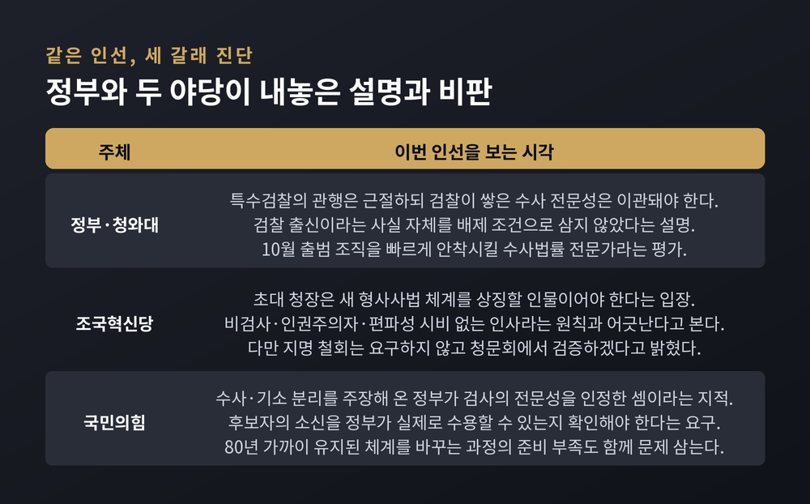
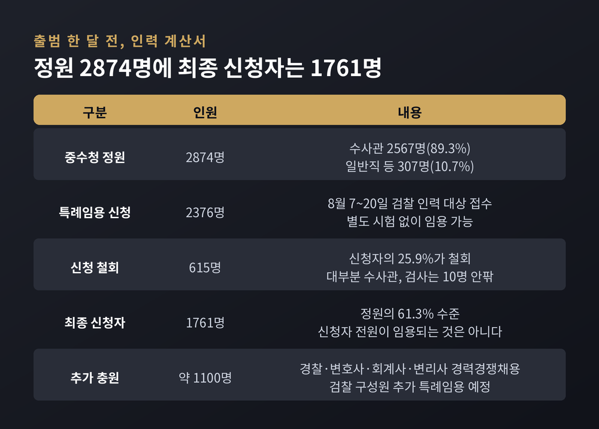

10월 2일 출범하는 정원 2874명 조직의 첫 수장 — 정부의 설명과 두 야당의 엇갈린 비판
이번 글에서는 초대 중대범죄수사청장 후보자 지명을 둘러싼 상황을 정리해 보겠습니다. 10월 2일 출범을 앞둔 신설 기관의 첫 수장 자리에 검찰 출신 인사가 지명됐고, 여당과 두 야당이 각기 다른 이유로 입장을 냈습니다. 사실관계와 양쪽 논리를 함께 짚어보겠습니다.

세 줄 요약
윤호중 행정안전부 장관은 9월 7일 정부서울청사에서 브리핑을 열었습니다. 초대 중수청장 후보자로 김지용 변호사를 임명 제청한다는 발표였습니다.
같은 날, 프랑스를 국빈방문 중이던 이재명 대통령이 김 후보자 지명을 결정했습니다. 강유정 청와대 수석대변인이 파리 현지 프레스센터에서 이를 알렸습니다.
김 후보자는 9월 8일 오후 서울 종로구 정부서울청사 창성동 별관으로 첫 출근했습니다. 인사청문회 준비단 사무실이 그곳에 마련됐습니다.
출근길에서 그는 "막중한 책임감에 어깨가 무겁다"고 말했습니다. 검찰개혁 관련 질문에는 청문회에서 소명하겠다며 답을 미뤘습니다.
먼저 기관 자체를 짚고 넘어가겠습니다. 이 인선의 무게는 기관의 성격에서 나오기 때문입니다.
중대범죄수사청은 2026년 10월 2일 출범합니다. 근거는 「중대범죄수사청의 조직 및 운영에 관한 법률」입니다. 소속은 행정안전부이며, 청장 임명 제청권은 행안부 장관에게 있습니다.
거슬러 올라가면 2025년 9월 26일 국회 본회의를 통과한 정부조직법 개정안이 출발점입니다. 검찰청을 폐지하기로 하고 1년의 유예 기간을 뒀습니다. 그 기간이 끝나는 10월 2일, 검찰청은 사라지고 기소를 맡는 공소청과 수사를 맡는 중수청으로 기능이 나뉩니다.
조직 규모는 정원 2874명입니다. 수사관이 2567명으로 89.3%를 차지하고, 일반직 공무원 등이 307명입니다. 본청 396명, 6개 지방청 2478명으로 나뉩니다. 사건이 몰리는 서울청에는 1089명이 배정됐고 청장 아래 차장을 세 명 뒀습니다.
지방청은 서울·수원·대전·대구·부산·광주 여섯 곳입니다. 「법원설치법」 제4조의 고등법원 명칭과 관할구역에 맞춰 설치했습니다. 수사와 공소, 재판의 연계성을 고려한 배치입니다.
수사 대상은 일곱 가지입니다. 부패, 경제, 방위사업, 마약, 내란·외환 등 국가보호 범죄, 사이버범죄, 법왜곡죄입니다. 여기에 보이스피싱·금융·가상자산(서울), 마약(수원), 국가재정범죄(대전) 등 합동수사과 다섯 곳을 신설했습니다. 아동학대와 성범죄 등을 다루는 사회약자범죄 전담 조직도 본청과 각 지방청에 뒀습니다.
청사도 검찰청 건물을 쓰지 않습니다. 수사·기소 분리 취지에 맞추기 위해 민간 건물을 임차했습니다. 본청과 서울청은 서울 중구 르네스퀘어빌딩에 들어갑니다.

예전에는 수사와 기소가 한 지붕 아래 있었습니다. 지금은 두 기관으로 나뉩니다. 김민재 중수청 개청준비단장의 표현을 빌리면, 이번 출범은 "수사와 기소의 분리를 실현하는" 단초에 해당합니다.
윤호중 장관은 8월 19일 브리핑에서 이를 "78년 형사사법 체계의 대전환"이라고 표현했습니다. 그만큼 초대 청장의 역할이 크다는 취지였습니다.
초대 수장은 조직의 기본값을 만드는 자리입니다. 인사 기준, 수사 관행, 내부 통제 방식이 첫 몇 년에 굳어집니다. 이 자리에 누가 앉느냐가 개혁의 실질을 좌우한다는 관측이 나오는 이유입니다.
한 가지 더 있습니다. 중수청은 강한 수사권을 행사하는 기관입니다. 정부도 이를 의식해 수사권 남용과 인권침해를 막을 내·외부 통제 조직을 직제에 별도로 넣었습니다. 임용권 역시 권한 집중을 막기 위해 행안부 장관과 중수청장에게 나눠 위임했습니다.
절차 자체는 공개적으로 진행됐습니다.
행안부는 8월 19일 중수청장 후보추천위원회를 구성했습니다. 이진수 법무부 차관과 김민재 행안부 차관 등 당연직 6명, 위촉직 3명을 합쳐 아홉 명입니다. 위촉직으로는 이주원 고려대 법학전문대학원 교수, 김효붕 법무법인 중부로 대표변호사, 홍종희 대한변협법률구조재단 감사가 참여했고 이 교수가 위원장을 맡았습니다.
같은 날부터 8월 26일까지 국민 천거를 받았습니다. 개인이든 단체든 누구나 후보를 추천할 수 있었습니다. 다만 비공개 서면으로만 접수했고, 공개적으로 천거하면 심사 대상에서 빠질 수 있다는 조건이 붙었습니다.
자격 요건은 중수청법에 정해져 있습니다. 수사나 법률 사무에 15년 이상 종사했거나, 판사·검사·변호사로 15년 이상 재직했거나, 법학 조교수 이상으로 15년 이상 재직한 사람입니다.
추천위는 9월 4일 네 명을 추렸습니다. 김관정·김지용·문홍주 변호사와 이윤제 명지대 법대 교수입니다. 이 가운데 윤 장관이 김 후보자를 제청했고, 대통령이 지명했습니다. 남은 절차는 국회 인사청문회와 대통령 임명입니다.

김 후보자는 58세, 사법연수원 28기입니다. 현재 법무법인 에이펙스 대표변호사로 일하고 있습니다.
검찰 경력은 대체로 수사와 공판을 오간 이력입니다. 대구지검 특수부장, 서울중앙지검 공판2부장, 대구지검 인권·첨단범죄전담부장, 대검찰청 감찰1과장을 지냈습니다.
2020년 검사장급으로 승진했습니다. 2021년에는 춘천지검장과 대검 형사부장을 맡았습니다. 2023년 광주고검 차장검사로 근무하다 퇴직해 변호사로 활동해 왔습니다.
청와대는 그가 다뤄온 사건들과 조직관리 역량을 인선 배경으로 들었습니다. 검찰 내부에서 온화하고 합리적인 리더로 통했다는 평가도 함께 언급됐습니다.
다만 승진 당시 직책을 두고는 매체별 표기가 엇갈립니다. 이 부분은 청문회 과정에서 정리될 사안으로 보입니다.

윤호중 장관은 제청 이유를 비교적 길게 설명했습니다.
핵심은 두 가지로 갈립니다. 하나는 특수검찰의 관행은 근절돼야 한다는 것이고, 다른 하나는 검찰이 축적한 수사 전문성은 중수청으로 넘어와야 한다는 것입니다. 윤 장관은 검찰 출신이라는 사실 자체를 "배제의 조건"으로 삼지 않았다고 말했습니다.
보완수사권 폐지에 반대했던 이력에 대해서도 답이 나왔습니다. 윤 장관은 그것이 검찰개혁 취지를 부정한 것으로 보지는 않는다는 취지로 설명하며, 구체적인 소명은 청문회에서 후보자가 하게 될 것이라고 했습니다.
청와대 설명도 같은 방향입니다. 강유정 수석대변인은 김 후보자를 "수사법률 전문가"로 소개하며 10월 출범을 앞둔 조직을 빠르게 안착시킬 적임자라고 밝혔습니다. 수사와 기소가 분리된 새 체계에서 수사 경험과 조직관리 역량이 필요하다는 논리입니다.
이 사안의 특이한 지점이 여기 있습니다. 두 야당이 모두 반대하지만 근거가 서로 어긋납니다.
조국혁신당은 검찰개혁의 상징성을 문제 삼습니다. 국회 행정안전위원회 소속인 정춘생 의원은 9월 8일 의원총회에서, 초대 중수청장은 새 형사사법 체계를 상징할 인물이어야 한다고 말했습니다. 당은 비검사, 인권주의자, 편파성 시비가 없는 사람이라는 원칙을 앞서 밝혀왔고 이번 인선이 그와 반대라는 입장입니다. 당 대변인 논평에서는 제도상으로만 수사와 기소를 분리했다는 비판을 피하기 어렵다는 지적이 나왔습니다.
다만 혁신당도 지명 철회까지 요구하지는 않았습니다. 청문회 과정에서 검증하겠다는 쪽으로 정리했습니다.
국민의힘은 반대편에서 같은 인선을 비판합니다. 행안위 야당 간사인 강명구 의원은 정부와 여당이 수사·기소 분리를 주장해 왔으면서 정작 검사의 수사 전문성이 필요하다고 인정한 셈 아니냐고 반문했습니다. 그러면서 정부가 후보자의 소신을 실제로 수용할 수 있는지 확인해야 한다고 했습니다. 80년 가까이 유지된 체계를 바꾸는 과정의 준비 부족도 함께 지적했습니다.
같은 당 서명옥 의원 역시 논리적 모순을 문제 삼으며 청문회에서 자세히 살펴보겠다고 밝혔습니다.
정리하면 이렇습니다. 한쪽은 개혁이 후퇴했다고 보고, 다른 쪽은 개혁의 명분이 무너졌다고 봅니다. 같은 인사를 두고 정반대 방향의 비판이 겹친 셈입니다.

인물 검증만 쟁점은 아닙니다. 숫자 문제가 더 급합니다.
행안부는 8월 7일부터 20일까지 검찰 인력을 대상으로 특례임용 희망 신청을 받았습니다. 현직 검사와 검찰수사관은 별도 시험 없이 중수청 공무원으로 임용될 수 있습니다. 이 특례는 2027년 4월 30일까지 적용됩니다.
신청자는 2376명이었습니다. 그런데 9월 1일 기준으로 615명이 신청을 철회했습니다. 최종 신청자는 1761명입니다. 정원 2874명의 61.3% 수준입니다.
철회자는 대부분 검찰수사관이고 검사는 열 명 안팎으로 알려졌습니다. 공소청 직제안에 대한 기대와 중수청의 업무 부담이 배경으로 거론됩니다.
게다가 신청자가 모두 임용되는 것도 아닙니다. 결과적으로 1100명가량을 더 채워야 하는 상황입니다. 정부는 경찰과 변호사, 회계사, 변리사 등을 대상으로 한 경력경쟁채용과 추가 특례임용을 예고했습니다.
김 후보자는 이 질문에 아직 보고를 받지 못했다며 답을 아꼈습니다. 조직을 조기에 안착시키겠다는 원론적 답변만 내놨습니다.
여기에 더해 검찰과 경찰 등 서로 다른 경험과 보고 체계를 가진 인력을 한 조직으로 묶는 일이 남아 있습니다. 기존 검찰 수사 사건의 이첩 기준을 만들어 수사 연속성을 확보해야 하고, 중수청 차장과 6개 지방청장 인선도 마무리해야 합니다. 출범까지 남은 시간은 한 달이 채 되지 않습니다.

남은 절차는 국회 인사청문회와 대통령 임명입니다. 행안부는 8월 브리핑에서 9월 하순쯤 임명을 마무리할 것으로 내다봤습니다. 중수청 출범일인 10월 2일은 법으로 정해져 있어 조정할 수 없습니다.
청문회에서는 세 갈래 질문이 예상됩니다. 첫째, 보완수사권 유지를 주장했던 과거 입장이 지금도 같은지. 둘째, 2020년 11월 추미애 당시 법무부 장관의 조치에 반발한 전국 검사장 성명에 참여한 이력을 어떻게 설명할 것인지. 셋째, 성남 아파트 관련 질문입니다. 김 후보자는 세 번째 사안에 대해 청문회에서 밝히겠다고만 답했고, 구체적인 내용은 아직 공개되지 않았습니다.
여기서부터는 전망입니다. 청문회 개최일과 보고서 채택 여부는 아직 정해지지 않았습니다. 두 야당이 서로 다른 이유로 부정적이라는 점은 청문 과정을 거칠게 만들 수 있는 요인입니다. 다만 혁신당이 지명 철회를 요구하지 않은 만큼 청문회는 검증 중심으로 흘러갈 가능성이 있습니다. 어느 쪽이든 예단하기는 이릅니다.
한 가지는 분명해 보입니다. 인력 문제는 정치적 입장과 무관하게 남습니다. 정원의 60% 남짓한 인원으로 출발하는 조직이 7대 중대범죄를 감당할 수 있는지, 그 답을 만드는 일이 초대 청장의 첫 과제가 됩니다.
끝으로 한 가지만 덧붙이겠습니다.
제도를 바꾸는 일과 그 제도를 굴러가게 만드는 일은 다른 문제입니다. 법은 이미 정해졌고 출범일도 고정돼 있습니다. 남은 것은 사람과 운영입니다.
이번 인선을 두고 여당은 전문성을, 야당은 각기 다른 각도에서 정합성과 준비 부족을 말합니다. 어느 쪽 진단이 맞는지는 아직 확정할 수 없습니다. 다만 논쟁의 무게가 인물 한 사람에게만 실려 있지 않다는 점은 분명합니다.
10월 2일 이후의 몇 달이 답을 대신할 것입니다. 그때까지는 청문회에서 어떤 질문과 답이 오가는지 차분히 지켜보시길 권합니다.
참고 소스